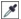

ыстрые ссылки на процедуры, описанные на этой странице:
• |
• |
• |
• |
Редактируемые и защищенные области маски можно определить с помощью данных о цвете в изображении. При использовании данных о цвете необходимо определить исходные цвета и значение отклонения цвета. Исходный цвет — это базовый цвет, который используется для определения защищенных или редактируемых областей. Значение отклонения цвета определяет процент допустимого отклонения цвета от исходного. Чем выше значение отклонения цвета, тем больше цветов добавляется в защищенные или редактируемые области маски. В основе отклонения цвета лежит подобие цвета.
Можно определить редактируемую область однородного цвета или редактируемую область, окруженную однородными цветами. Если область окружают однородные цвета, можно сделать примерный абрис, который сузит редактируемую область, или взять в качестве основы для редактируемой области границу между однородными цветами.
С помощью цветовой маски можно определить редактируемые области по всему изображению. Цветовая маска позволяет выбирать исходные цвета по всему изображению, а не только в определенной области.
Цветовой порог позволяет еще точнее задать диапазон цветов, включаемых в редактируемую область. В соответствии со значением цветового порога оценивается яркость каждого исходного цвета и определяется, какие пиксели включаются в редактируемую область. Настройка цветового порога позволяет снижать и повышать резкость пикселей по краям редактируемой области. Чтобы настроить пороговые уровни цветовой маски, можно использовать предварительное изображение в оттенках серого для отображения маскируемых областей черным цветом, а редактируемых — белым.
Синие, зеленые и сиреневые пиксели в исходном изображении (слева) выбраны с помощью цветовой маски (справа).
Можно задать редактируемую область в определенном цветовом канале. Каждое цветное изображение имеет множество цветовых каналов, каждый из которых представляет один компонент цветовой модели изображения. Например, изображение в режиме RGB определяется значениями красного, зеленого и синего каналов. При отображении изображения в режиме отдельных цветовых каналов отображается только часть данных о цвете. Отображение только определенных цветовых каналов позволяет более точно определять редактируемую область.
| Определение редактируемой области однородного цвета |
1. |
В наборе инструментов выберите инструмент Маска волшебной
палочкой |
2. |
На панели свойств нажмите кнопку Обычный |
3. |
Введите значение допуска в поле Допуск.
|
4. |
Щелкните цвет на изображении.
|
Чтобы изменить изображение сложной формы, представленное на
простом фоне, можно определить фон в качестве редактируемой
области однородного цвета, а затем инвертировать маску, чтобы
сделать форму редактируемой. Для получения дополнительных
сведений об инвертировании масок см. раздел Инвертирование и
удаление масок.
|
При выборе цвета первого пикселя задается исходный цвет. Все
смежные пиксели с цветами, входящими в указанный диапазон
отклонения цвета, включаются в редактируемую область.
Редактируемая область расширяется до пикселей с цветами, которые
превышают указанное отклонение.
|
Область определена путем выбора оранжевого пикселя с помощью инструмента Маска волшебной палочкой.
| Определение редактируемой области, окруженной однородным цветом |
1. |
В наборе инструментов выберите один из следующих инструментов.
|
• |
С помощью инструмента Маска лассо |
• |
С помощью инструмента Магнитная маска |
2. |
На панели свойств нажмите кнопку Обычный |
3. |
Введите значение допуска в поле Допуск.
|
4. |
В окне изображения щелкните цвет, который требуется защитить от
изменений, а затем щелкните в разных точках для создания абриса
редактируемой области.
|
5. |
Дважды щелкните, чтобы завершить создание абриса.
|
Можно задать, чтобы в качестве исходного цвета выбирался только
цвет первого выбранного пикселя или цвет каждого выбранного
пикселя. Диапазон отклонения цвета определяет диапазон цветов,
защищенных от изменений. Когда первый выбранный пиксель
задается в качестве исходного цвета, защищенная область
расширяется до указанного отклонения цвета. При использовании
инструмента Маска лассо замкнутый абрис редактируемой области
сужается по отношению к первоначальному абрису и заключает
неправильную форму, сформированную путем исключения всех
пикселей из исходного абриса, которые входят в указанный диапазон
отклонения цвета. При использовании инструмента Магнитная
маска каждый выбранный пиксель задается в качестве исходного
цвета, поэтому при каждом щелчке защищенная область
расширяется до указанного отклонения цвета. Отклонение цвета
изменяется по отношению к текущему исходному цвету в рамках
определенной области вокруг указателя.
|
Кроме того, можно перетащить курсор в окне изображения, чтобы
создать абрис в режиме свободной формы. С помощью инструмента
Магнитная маска можно щелкать многократно для задания
нескольких исходных цветов или опорных точек.
|
| Определение редактируемых областей по всему изображению |
1. |
Выберите пункт Маска |
2. |
Нажмите кнопку обычного режима |
3. |
Выберите Цвета по образцу в верхнем всплывающем меню.
|
4. |
Выберите инструмент Пипетка  и щелкните все исходные цвета в окне
изображения.
|
5. |
Нажмите кнопку Просмотр |
6. |
В списке рядом с кнопкой Просмотр выберите один из следующих
пунктов.
|
• |
Наложение: наложение красноватого прозрачного слоя на защищенные
области.
|
• |
Оттенки серого: защищенные области отображаются черным цветом, а
редактируемые – белым.
|
• |
Черный матовый: наложение черного прозрачного слоя на
защищенные области.
|
• |
Белый матовый: наложение белого прозрачного слоя на защищенные
области.
|
• |
Рамка: отображение пунктирной линии вокруг редактируемой области.
|
7. |
Нажмите кнопку Больше и выберите один из следующих параметров.
|
• |
Стандарт: определение отклонения цвета по цветовой разнице между
пикселями.
|
• |
Режим HSB : определение отклонения цвета по разнице между
уровнями оттенка, насыщенности и яркости пикселей.
|
8. |
В поле рядом с каждым исходным цветом укажите процент отклонения
цвета, допустимый между пикселями этого цвета и оставшимися
пикселями.
|
9. |
В области Порог переместите регулятор Порог и выберите один из
следующих параметров.
|
• |
В черный: добавление в защищенную область всех пикселей со
значением яркости выше порогового значения.
|
• |
В белый: добавление в редактируемую область всех пикселей со
значением яркости выше порогового значения.
|
Если в диалоговом окне Цветовая маска отображаются цвета из
предыдущего сеанса, нажмите кнопку Сброс перед созданием новой
цветовой маски.
|
Стиль отображения Рамка недоступен в том случае, если команда
Показывать рамку отключена в меню Маска.
|
Для цветовой маски можно задать отклонение цвета по умолчанию.
Для этого нажмите кнопку выпадающего меню и выберите
Установить допуск по умолчанию.
|
Кроме того, можно задать предварительно определенные исходные
цвета, выбрав заготовку цвета, например Зеленые, в списке рядом с
инструментом Пипетка.
|
| Определение редактируемых областей в определенных цветовых каналах |
1. |
В окне настройки Каналы щелкните значок с изображением глаза |
Если окно настройки Каналы закрыто, выберите пункт Окно |
2. |
В наборе инструментов выберите один из следующих инструментов.
|
• |
Маска лассо |
• |
Маска волшебной палочкой |
3. |
Определите область на изображении.
|
Copyright 2012 Corel Corporation. Все права защищены.